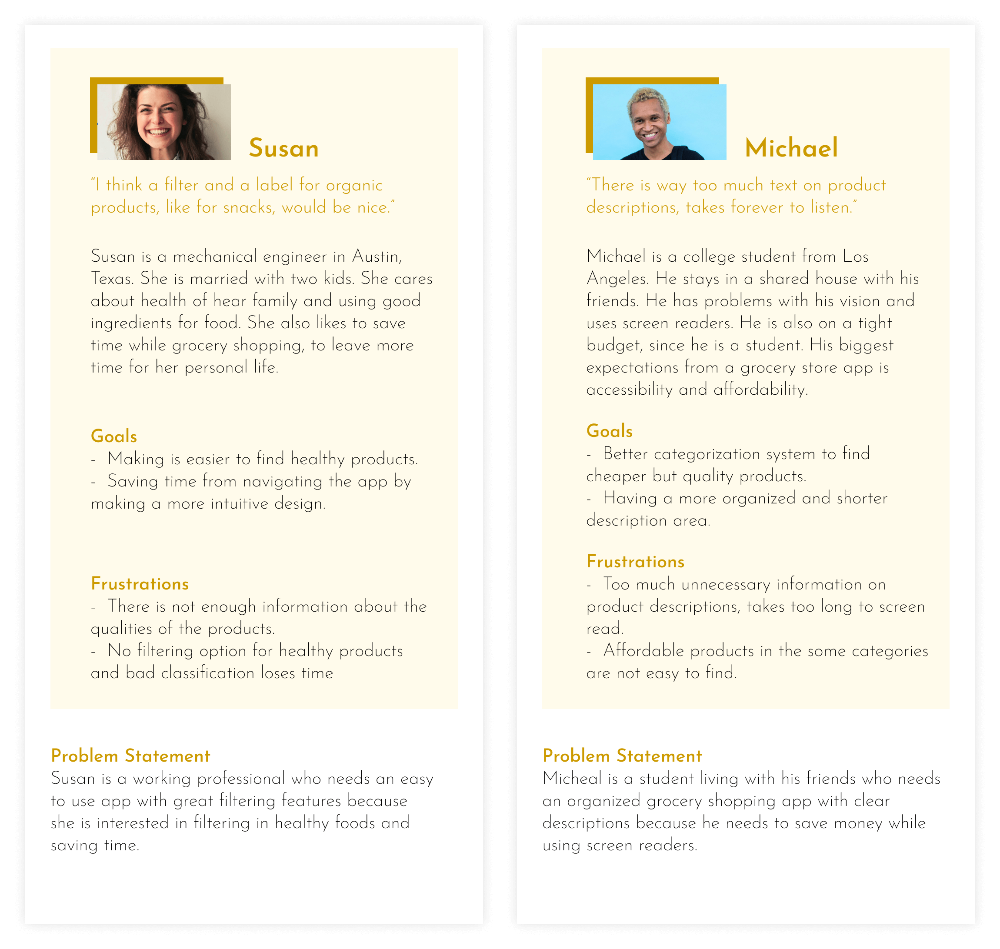
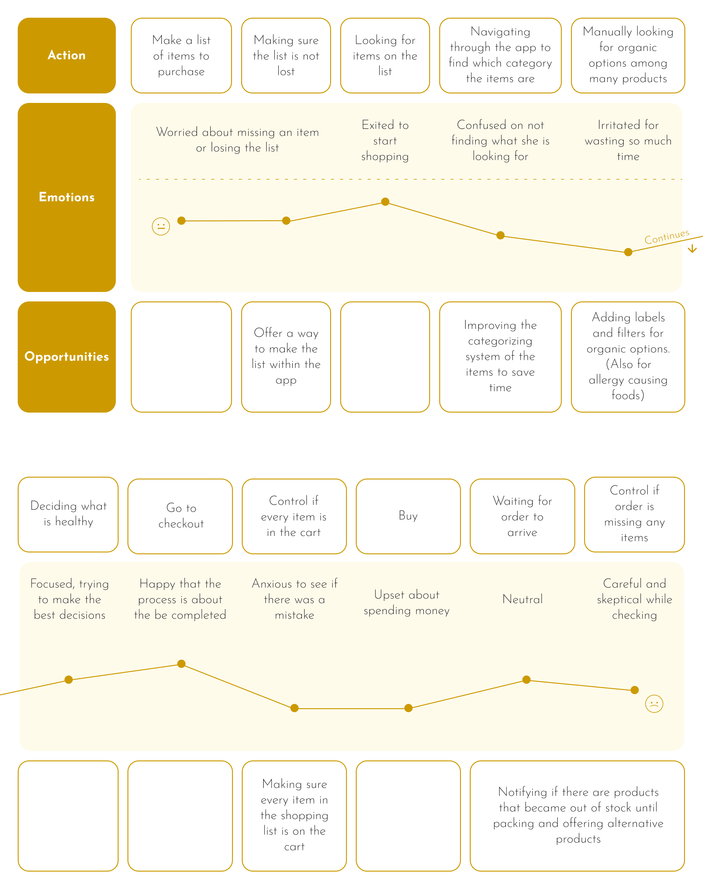
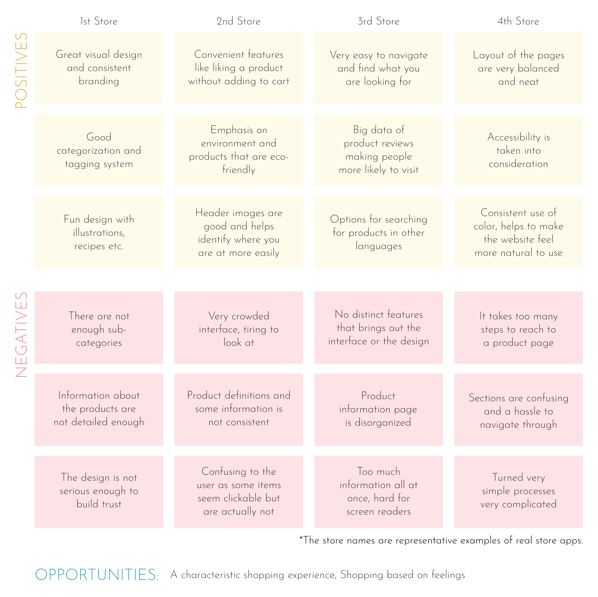
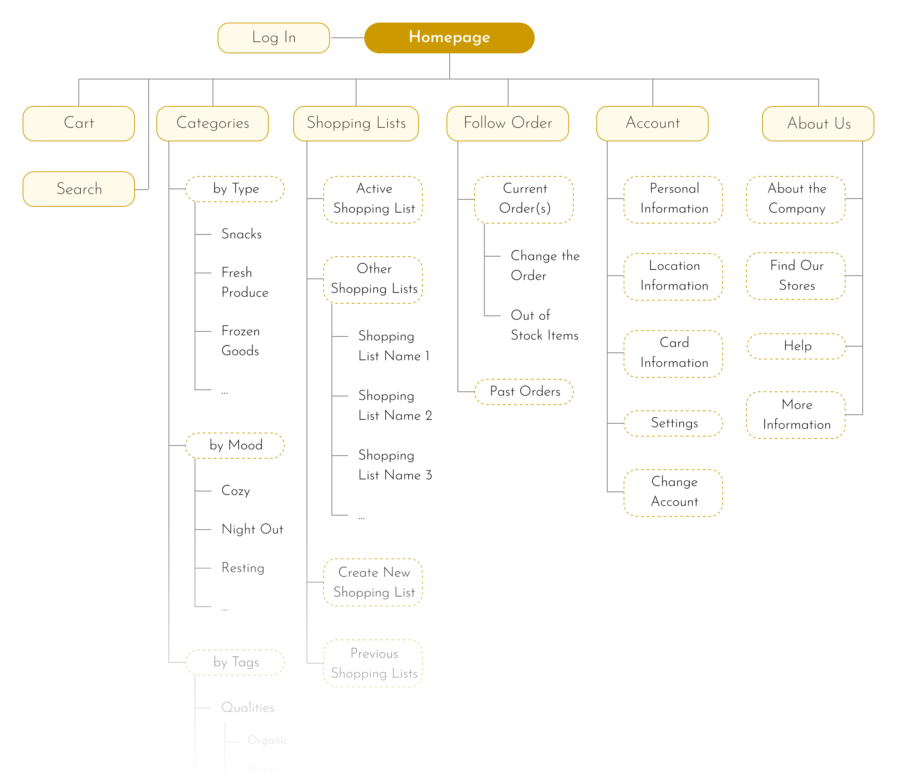
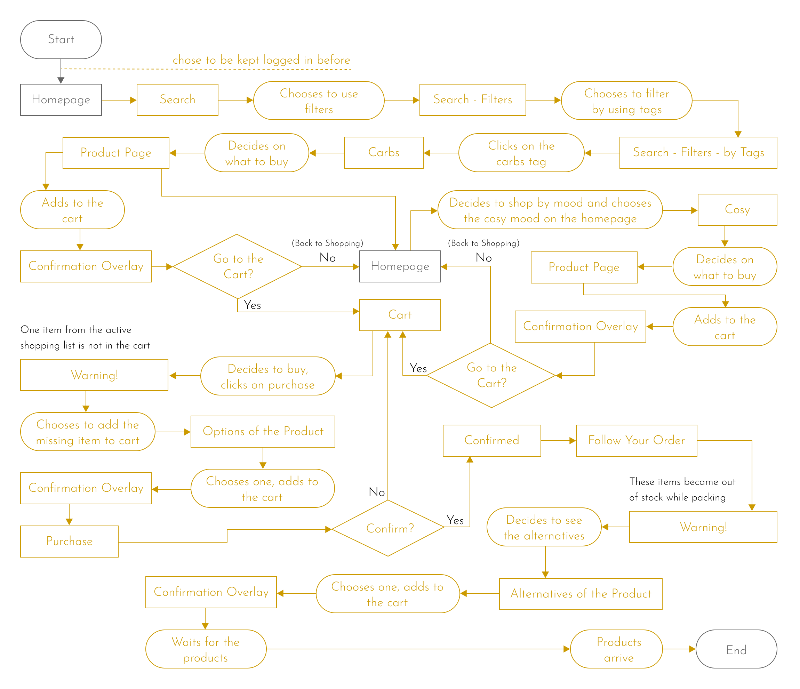
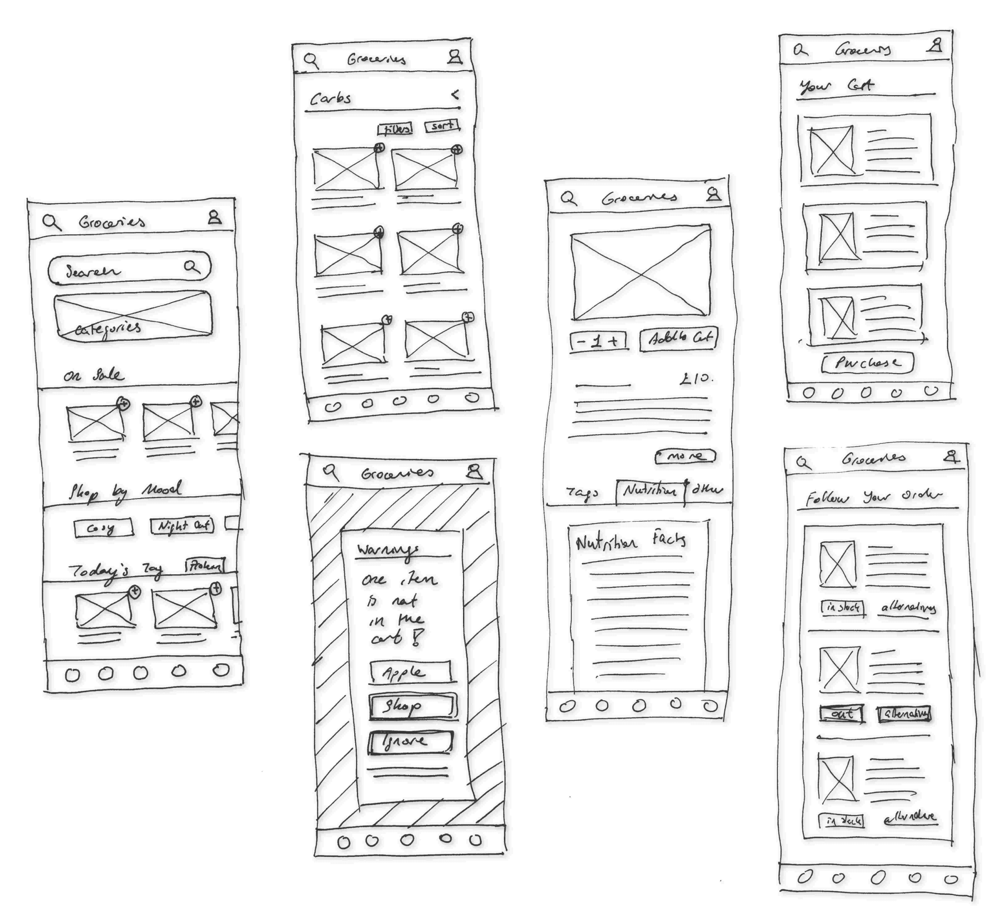
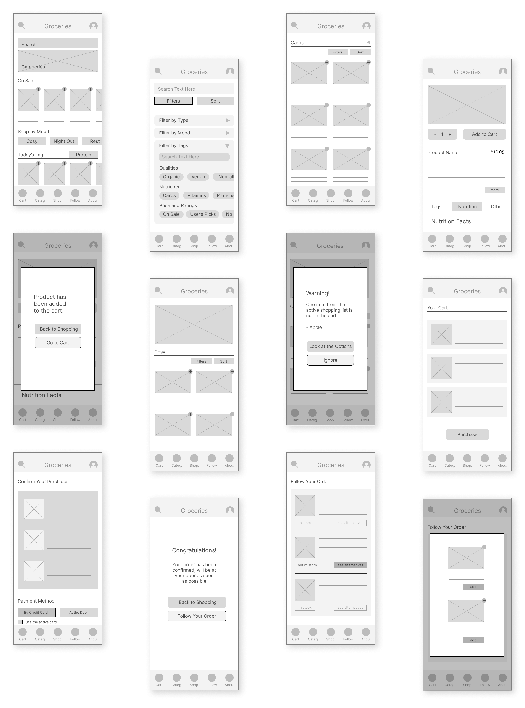
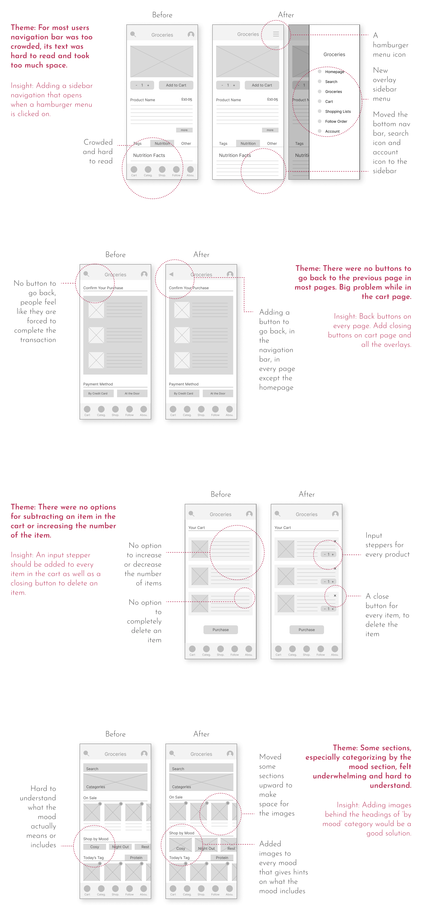
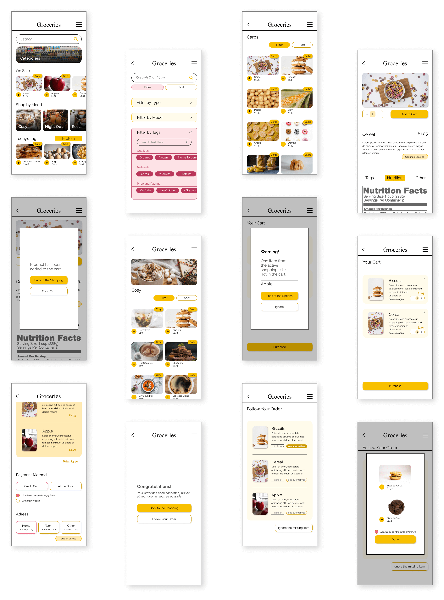

Groceries is a new app of a local company, with multiple franchises in the city, that is focused on an enjoyable, personalised, and original grocery shopping experience for all.
UX designer designing an app from conception to delivery.
Conducting research, paper and digital wireframing, low and high-fidelity prototyping, conducting usability studies, and iterating on designs.
January-February 2023
The company lacks an app at present, and the stakeholders are looking to develop a unique app that sets it apart from the competition.
To design an intuitive and easy-to-use grocery store app with improved categorization systems and innovative features for all users.
I observed people around me and identified who are more likely to use grocery store apps. I also observed their process of shopping and then interviewed them.
The research concluded three main pain points:
- Products need better filtering or tagging to help users choose specific types of products.
- A well-organized categorization system is needed to effectively navigate tha app and save time.
- The only options if an item has gone out of stock after the purchase are to not buy the item or let an employee choose something similar. People want something more.
The primary target audience consisted of busy working individuals who lacked the time to physically visit a grocery store along with disabled people, and students who were more inclined towards utilizing technology.
This map indicates that adding a "tagging" feature, a shopping list option, and a "follow your order" feature would be highly advantageous for users.
During the competitive audit, I primarily analyzed the apps of major grocery store chains, as well as one grocery store known for its uniquenes. Overall, they were well-designed; however, each app lacked certain features that were present in others or desired by our users.
The ideation part was when the app's structure really developed. The hows and whys have become concrete in this part. There were a lot of changes made to design the optimum experience.
The app has a hierarchical structure with seven main branches in its main menu. These are Cart - for making purchases, Shopping Lists - to create lists of items to buy, Follow Order - to track your orders and receive notifications, Account, About Us, Categories, and Search - for searching for specific products.
User flow for Susan. Starting from adding a carb by searching for it with filters. Then she shops by mood and looks for products in a cosy mood. Goes to cart for purchase and receives a warning that one item that is on the active shopping list is not in the cart, then adds that item. After the purchase, she sees that an item has gone out of stock before shipment, so she chooses an alternative to her liking.
During the low-fidelity design phase, the design, layout and interaction of the pages were decided. The intention was making the most useful features stand out and to maintain consistency in the forms for branding.
The initial layout for the app has been established, with a focus on highlighting the most frequently used features. One notable addition is the "Today's Tag" section, which will feature a new tag every day, such as gluten-free.
During the process of turning sketches into digital wireframes, it became apparent that additional pages were necessary. At this stage, I decided which elements would remain visible above the fold and worked out the finer details of how search filtering would function.
This is the final prototype that will be tested for usability. The movements, such as how items will scroll or how buttons will change after being clicked, have been established.
The prototype visualizes some of the user flows in the following order:
- Searching for carbs by filters and adding one to the cart,
- Adding an item tagged as cosy to the cart,
- Going to the cart and getting notified that an item in the shopping list is not in the cart,
- Adding the missing item,
- Completing the purchase,
- An item has gone out of stock before shipment, so she chooses an alternative.
It was easy to find participants for the test as there are many people who shop for groceries online. However, the challenge was to make them understand that they should focus on the functionality of the app rather than its lack of colors. Most of the feedback received was about the app's user interface. Consequently, I have learned that it is essential to disclose to participants that they should disregard the app's user interface during the testing phase.
The recent app updates were aimed at enhancing user experience by simplifying navigation. This was achieved by incorporating a slide-in hamburger menu, a back button, and input steppers in the cart. Additionally, more images were added to buttons to provide users with a better understanding of the destination they would be directed to.
The primary objective of the high-fidelity design was to create an immersive and engaging shopping experience for users, while also motivating them to make purchases and encouraging them to spend more time in the app.
Fun, bright colours were chosen to make the shopping experience feel like a fun time. Also, the choice of yellow was specific for it induces appetite and happiness. Borders and lines were commonly used to increase definition and feelings of certainty. Shadows and overlays helped design a more dimensional interface.
In this phase, I came up with more ideas. I thought about creating a shortcut for adding items to the shopping list by extending the use of the same add button that is shortcut for adding items to the cart. Or the button regarding the price difference while choosing an alternative. The button states were improved at this point too.
The prototype visualizes some of the user flows in the following order:
- Searching for carbs by filters and adding one to the cart,
- Adding an item tagged as cosy to the cart,
- Going to the cart and getting notified that an item in the shopping list is not in the cart,
- Adding the missing item,
- Completing the purchase,
- An item has gone out of stock before shipment, so she chooses an alternative.
made by M. Dilara Özdemir
with love